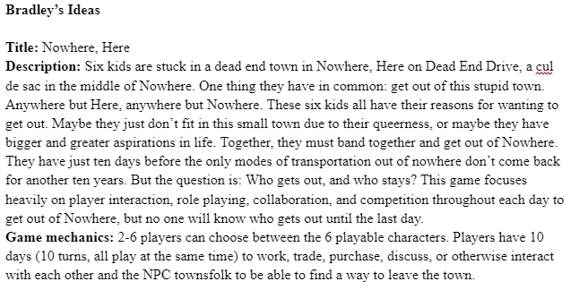

Nowhere - Mapping Out Board Games
17 Feb 2023
Welcome to our second blog post (almost) immediately following the first! Wondering why there’s two blog posts (almost) back to back? To make a long story short: we’re college students, and a silly little bee city building game isn’t exactly going to help us pass our classes. Not only that, but the website wasn’t exactly in a state to actually post blogs so we had to kick stuff into full gear to at least get the website into shape. Finally, stuff in HoneyCo is moving at an accelerated pace.
Now I know there’s a few questions: Who’s writing this blog? You’re making board games? What happened to Beeswax? What is that third game on your website?
(1) Hi, I’m Bradley Estacio. I’m the game designer for HoneyCo! We’ll get more into how I exactly stumbled into this role for the team in a bit.
(2) Yes, board games. Joshua and I (along with a couple other friends) took a class about game design at our college led by Dr. Carly Kocurek. The class had us learn about game design with a focus on board games. Throughout the semester, we had to create and submit a few board game concepts based on the requirements of the assignment. This class really got me to think about how theming and mechanics work in tandem with telling a story within a game and player experience.
(3) All of Your Beeswax! is not going anywhere. Beeswax is going to take a much longer time to develop due to the difficulty and scale of the project, and I’m going to be honest it’s mostly just been Joshua working on it on and off for the past year (sorry Josh).
(4) It’s our current project set for release this summer! Allow me to elaborate.
The Stumble Into Board Game Design
I’m studying computer engineering right now, but I recently decided on getting a minor in game studies and design.I knew our school offered a game design minor but the core classes for the minor weren’t offered often and when class sign-ups opened they were immediately filled. Last year, I found out that one of my CS electives and a technical class I took last fall would count towards the minor. So, I immediately applied for the minor and managed to get into the Fundamentals of Game Design class this past fall. That’s where things really started to pick up.
Two years ago I was given a game called Root: A Game of Woodland Might and Right by Leder Games for Christmas. Up until that point, the only board game I played with my friends regularly was Betrayal at House on the Hill. Betrayal is loads of fun of course, but at the time, to me it was just that. A fun (and sometimes excruciatingly long) board game. Of course I was super excited to play Root when I got it because it was fun reading through everything and seeing the cute little animal pawns. But, I didn’t really have anyone to play it with because all my high school friends were off at college and were pretty busy. Now at the beginning of last semester I had the great idea of bringing Root to the dorm so my friends and I can play it. The reason being was that our game design class revolved around board games. This pleasantly surprised me. Upon truly playing Root for the first time, I fell in love with the game.
This and my game design class started my addiction to board games. And board games cost a lot of money! I’m just a college student! Some other board games I bought and have forced my roommates to play include: Wingspan, We Didn’t Playtest This at All, Planted, PARKS, Moon Adventure, Dulce, and Tokyo Highway. The reason I have as many board games as I do now is because our professor made us play board games and have discussions about them based on the readings we had to do for that week. It’s also thanks to Root and the game design class is where I started to get into game design. Sure I tossed out a couple ideas for Beeswax here and there but I didn’t truly get a good grasp of game design back then. And even now I still don’t feel like I’m really good at it, but the stuff I seem to toss out seems to be liked by people on the team so here I am in the role and I’m not really complaining, it’s just funny. Of course, as this company grows and I design more games (or I hope I’m able to design more games in the future), I’ll continue to learn. Because learning is a part of life!
As a brief aside, I should mention our college campus (IIT), despite having an eSports center, doesn’t have any big resources to develop video games unlike other universities such as DePaul or Columbia. So we just kind of made a natural turn into board games and we actually have resources on campus to develop components for board game prototypes.
The Concept of Coming Out (of Nowhere)
Okay, you guys can all laugh at the section’s title but the game was originally named Nowhere, Here. Our final assignment for game design was a group project to make a board game prototype in the span of about a month with a final prototype playtest on the day of the last class. Seemed easy enough. Considering just earlier in the semester our school hosted a 2 week long game jam (that we won, by the way) and all we had was some shoddy prototype components and our design doc (this may or may not be why we have a third game listed on the website right now).
Our restrictions were the following:
(1) The total playtime of the game had to be about 20 minutes (5 minutes to learn the rules, and 15 to play). We met this requirement, the prototype play time was pretty short.
(2) Our games had to fit within a 9’’x6’’x2.5’’ box. We actually did not meet this requirement due to the final size of the board.
Funnily enough, our group consisted of me, Joshua, Yasi and Joe (you’ll probably hear from the other two in the upcoming weeks). One of the goals we had for coming up with ideas was trying to make a cooperative board game. A couple ideas were tossed around here and there so it came down to a vote.
Our group voted for which game idea to move forward with. Nowhere, Here won.
Some of these other ideas are really cool and I hope that in the future we can revisit them. As a consequence of this group project, Joe joined the HoneyCo team (sorry Joe, you’re part of this now).
All of the ideas were pretty good, but a lot had to get shafted. Joshua changed their vote on Nowhere some time after this to make it a one point difference.
I guess I would consider myself the creative type. I dabbled in creative writing when I was younger so game design really sparked that joy inside of me. I always wanted to create a game, a video game for sure, though I never really considered board games until several months ago. My initial inspiration for Coming Out of Nowhere was the feeling of tranquill escapism—to run away to the countryside… I thought of games like Night in the Woods and the nature of growing up in a dead end town. I came up with a simple narrative: six misfit kids stuck in some dead-end town are planning their means to escape over the next ten days. If they can’t escape by the last day, they’re stuck there forever.
Original pitch for the game.
I’ll admit, the original concept was rather blurry and broad given our constraints. Even before that I had a concept where it was a TTRPG with a GM and everything, hence why I included interacting with the NPC townsfolk. But there was something within my pitch that the group liked and we knew that we could take this idea and transform it into something a bit more refined. Then, we made a concept document as it was part of the project requirements.
On the off chance that this idea wasn’t chosen, I decided not to think too deeply about the game, but there were several ideas bouncing around in my head. The rest of the team helped provide suggestions and changes to ideas I already had, as well as providing some of their own. The main gameplay loop would consist of the players going to different parts of the map each day collecting items that would eventually allow them to escape, such as getting a bus ticket or fixing a car to get out of town. To give the players a sense of urgency, we decided to have the local sheriff become the antagonist of the teens, trying to catch them to prevent them escaping town. Each character would not only have their own narrative aspirations for leaving, but have abilities tied to them as well.
So it seems we had the following down so far:
(1) A concept and narrative that we wanted to further develop.
(2) A vague idea of game mechanics and how players would win the game.
Big items on our agenda!
That is not a lot. At this point we had to develop a design document and really get into the nitty gritty of board game design. We had to expand upon our current ideas and come up with more things to potentially include in the game. We were off, throwing ideas at the wall and seeing what stuck. Since the project was very low stakes and I was already planning on wanting to take this game past the scope of class, it didn’t hurt to leave some ideas on the cutting room floor. In fact, some previously scrapped ideas managed to come back to life.
Now, I would love to go on but Joshua is cutting me off on writing this blog. I’ll dive into the characters of the game some other time. I really have to thank Joshua, Joe, and Yasi for helping this game come to life, as well as Dr. Kocurek for giving feedback throughout our game design process. Stay curious! And stay tuned for the next Nowhere blog! We are planning on launching a Kickstarter to get this game into the public too, so watch out for that as well.
- Bradley Estacio